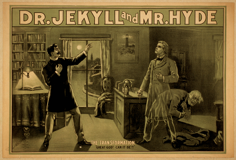

Moving from Textpattern to Hyde
This post is about my switch from Textpattern to Hyde as my website system (some call it CMS thought).
In the past I tried a few systems, starting with Wordpress, then MediaWiki and then Textpattern. The reasons for this changes were mostly the extensibility of the systems and the way you write articles/posts etc. Until the next switch I think I’m happy with Hyde :)
Textpattern
What I really liked about Textpattern is the way you can customize the structure of your website. You can freely define serveral ?Textbausteine? which are some kind of shortcuts for often used ?Ausdrücke?, like a header, menu or footer. Because it is so easy to extend the structure it was very easy for me to implement RDFa. Nevertheless I felt Textpattern is a bit moldy and I couldn’t really cotton up with Textile, but that’s 100% subjective.
Hyde
Hyde is a static website generator originally based on Django. It can be seen as the Python equivalent of Jekyll which is written in Ruby. Because I was working with Django for 2 years, I really like that Hyde is using the Jinja2 template engine which is modelled after Django’s. Near this fact I mainly chose Hyde because it is incredibly fast cause its pure static html. And a last big goody is that I can write the articles with Orgmode, but more on this later.
I try to sum the facts up:
Pros:
- static → really fast
- uses Jinja2
- easy to extend
-
existing plugins like:
- URLcleaner
- OptiPNG, jpegoptim
- UglifyJS
- active development
- (it’s Python :) )
Cons:
- I don’t want to call this a con, but the fact that Hyde produces static content you have to include external tools for comments, website statistics or other dynamic stuff. But this is a) no problem and b) not all people needs a commenting system for example.
At this point could be a lot more interesting stuff about Hyde, like the possible settings, or the publishers which allows to publish the website to different sources like git repositories, S3, a zip file or normal ftp locations. For this further knowledge I try to collect some resources which hopefully will give you a better overview of Hyde’s features.
Resources
- Documentation
- Github
- Hyde Starter Kit
- “Moving from Django to Hyde” by Steve Losh
Orgmode and Hyde
This part is about how to write articles or generally content with Orgmode. With Hyde it is basically no problem to write content with Markdown or Textile. But I like the markup of Orgmode more than Markdown and Textile together. Here are two reasons:
- Many Latex symbols out of the box like ∀ ,∃ ,α ,β and so on
-
Orgmodes ascii tables are exportes to html table - I never found a way to generate tables that simple
H1 H2 H3 1 2 3
Project structure
It is advisable to organize your website in an Orgmode project. My folder structure looks like this:
|-- content | |-- about | |-- blog | |-- code | |-- media | `-- study |-- deploy | |-- about | |-- blog | |-- code | |-- media | `-- study |-- layout `-- org
You also have to define the project in a config file of Emacs. In my case it looks like this:
(setq org-publish-project-alist
'(
("kendix.org"
:base-directory "~/Code/websites/kendix.org/org/"
:base-extension "org"
:publishing-directory "~/Code/websites/kendix.org/content/blog"
:recursive t
:publishing-function org-publish-org-to-html
:headline-levels 4
:html-extension "html"
:body-only t ;; Only export section between <body> </body>
)
))
This means I write my articles in the org directory. After that I export (C-c C-e X) the project (the articles) to content/blog directory. And from there Hyde uses the generated html files for deploying.
YAML settings
Each article can contain yaml settings like the title, creation timestamp or whatever. To tell Orgmode that this is no content which it
should export to html you can use the #+BEGIN_HTML directive. So this article for example starts with:
#+BEGIN_HTML --- --- title: Moving from Textpattern to Hyde created: !!timestamp '2012-01-18 16:55:00' tags: - textpattern - hyde - python ---
Note: Normally there would be only one “—” line above title, but Orgmode removes the first line in my case so this is a little hack.
Now you should be able to easily write your content with Orgmode and let it serve by Hyde.
So, I hope I could give a little overview about Hyde and its features. And maybe someone will find the Orgmode part useful.